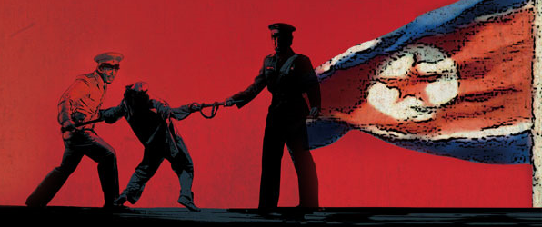

-기본 생존권 침해
-직업선택 및 교육의 자유 박탈
이런 사례들을 전부 인권침해라고 볼 수 있겠죠..
세계 인권 선언 내용에서 어긋난 부분은, 우선 일당 체제이고 그 당만 따르도록 되어있으니
정치적 자유가 침해 되었고요, 드라마, 영화 등도 자유롭게 볼수 없으므로 문화적 자유도 지켜지지 못하고있습니다.
무엇보다 흉년이 들어도 국가는 거의 신경을 쓰지 않고 매년 배고픔을 못이겨 탈북하다가 잡히는 사람은 잡아다가 거의 반죽음을 만들어 놓거나 사형시키죠
이 사례에서 생존권적 기본권이 지켜지지 않았습니다. 북한은 대부분의 '인권'이 지켜지지 않고 있다
 영영여여여여ㅕ여여영상
법을 바꾸거나 민주주의 국가로 바꾼다.
대통령을 바꾼다.